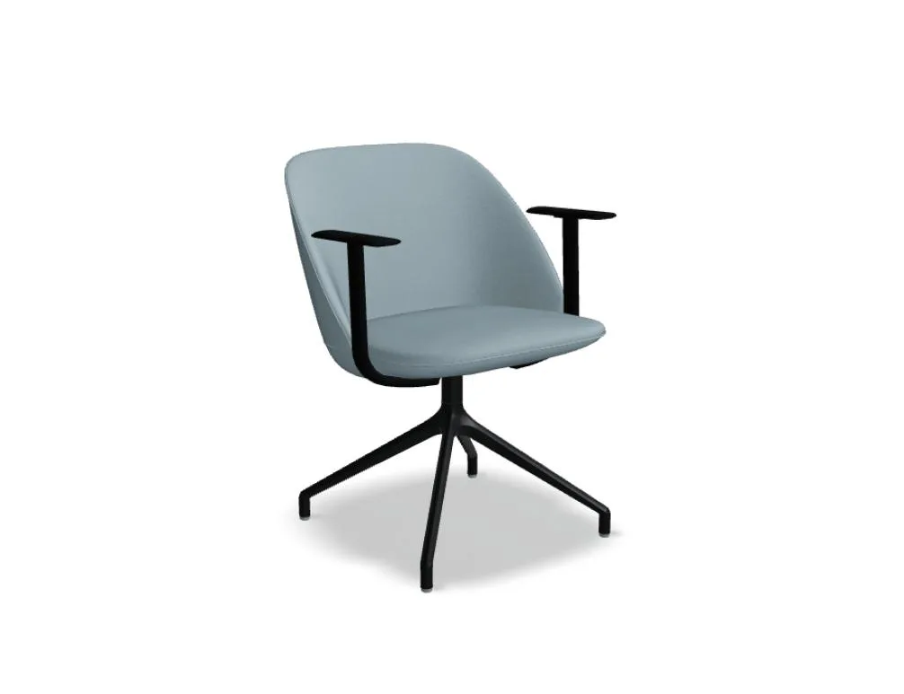
1 / 1Kolekcja Paralel 
Paralel
Paralel to fotel konferencyjny MDD zaprojektowany przez Yonoh Studio. Występuje z czterema rodzajami podstawy i w dwóch wysokościach: 790 lub 960 mm.
Potrzebna wycena?
Wycena zależy od tkaniny i konfiguracji — przygotujemy ofertę indywidualną.
506 147 435Wysokość 790 mm. Aluminiowa podstawa 4-ramienna malowana proszkowo, na stopkach; siedzisko obrotowe 360°.
Projekt: Yonoh Studio
Cztery rodzaje podstawy: 4-ramienna aluminiowa (stopki lub kółka), stała na 4 nogach, z aluminium polerowanego, 5-ramienna obrotowa
Wysokość całkowita 790 lub 960 mm (PR2P22: 930 mm)
PR2P22: regulacja wysokości siedziska 450–570 mm i mechanizm przechyłu z blokadą
9 kolorów RAL podstawy malowanej
17 kolekcji obić, w tym skóra
5 lat gwarancji producenta
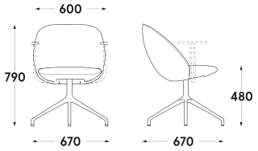
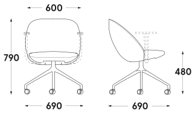
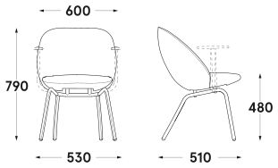
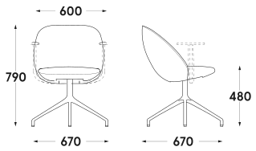
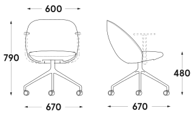
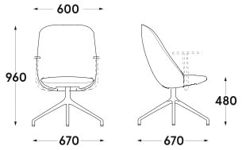
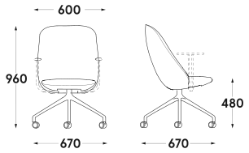
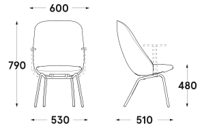
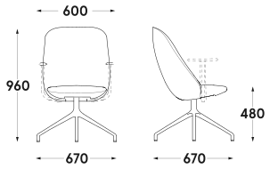
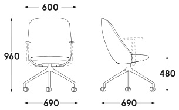
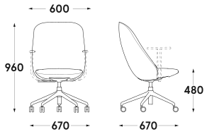